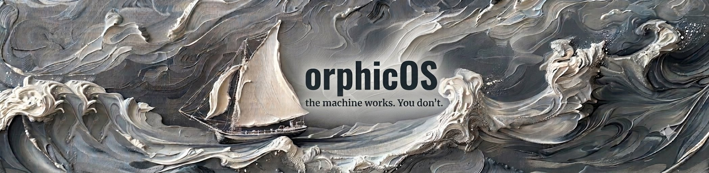

An operator for Windows 11
OrphicOS — the machine works. You don't.

Run your Windows 11 PC by voice or text. You speak or type; your machine carries it out.
You speak or type. Your machine does it.
Open apps, write emails, control your software, browse, move files — hands-free. OrphicOS reads what's on your screen, decides the next step, and carries it out.
You watch every action as it happens. One key stops everything.
"Open Notepad and type: the machine works."
- Readthe screen, as a tree of named elements
- Launchnotepad.exe
- FocusUntitled — Notepad
- Type"the machine works."
Spoken command; executed sequence. From our test runs.
Three steps. No setup.
Install
A small Windows app. No model setup, no keys, no configuration.
Sign in
Your OrphicOS account connects your machine to the OrphicOS engine.
Speak
Hold the push-to-talk key and say what you want done. Or type it.
Processed securely on OrphicOS servers. Encrypted in transit. Your screen data is never stored.
Voice audio is transcribed on your device — the microphone never leaves your machine.
Put the machine to work.
Requires Windows 11.
The installer is new and not yet signed, so Windows SmartScreen will ask before the first run. Choose More info → Run anyway.